Local before/after review. No deployment. Full-page captures include the unchanged shared navigation and footer.
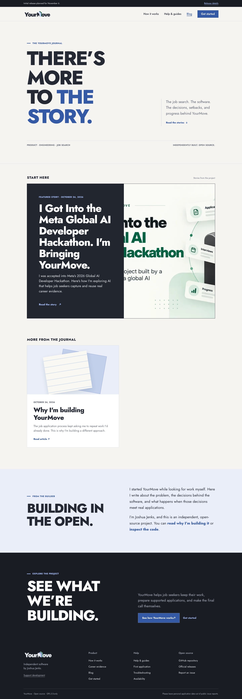
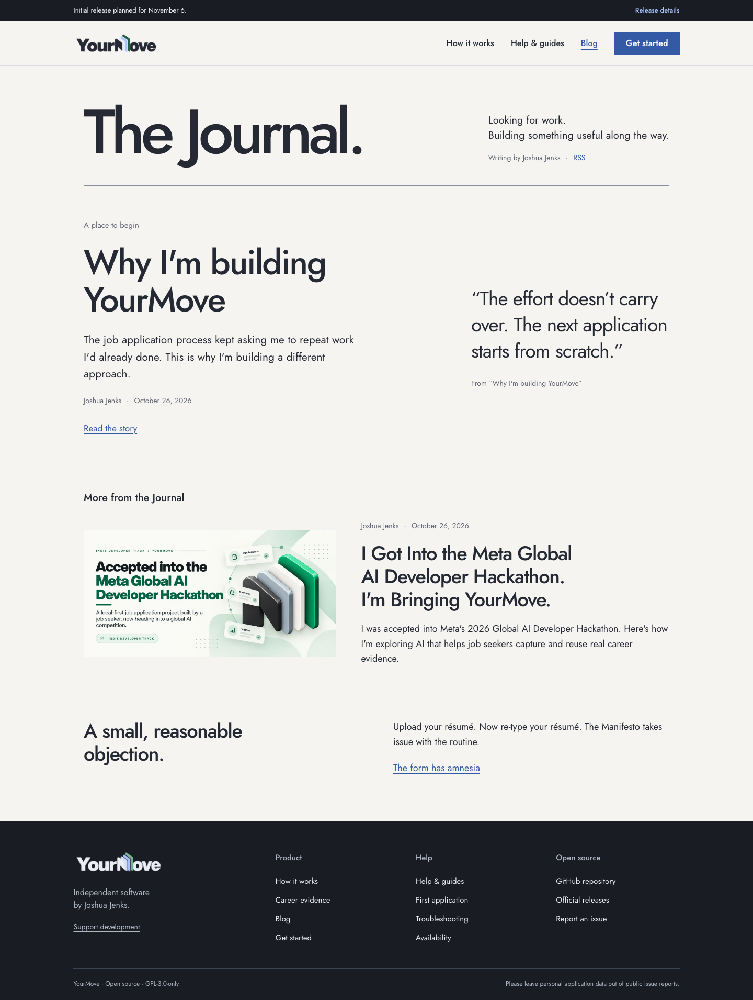
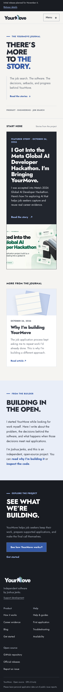
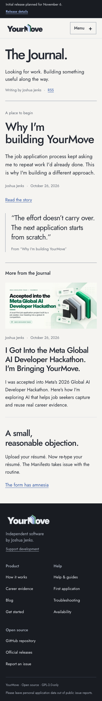
Other final widths: 320px · 768px · 1024px
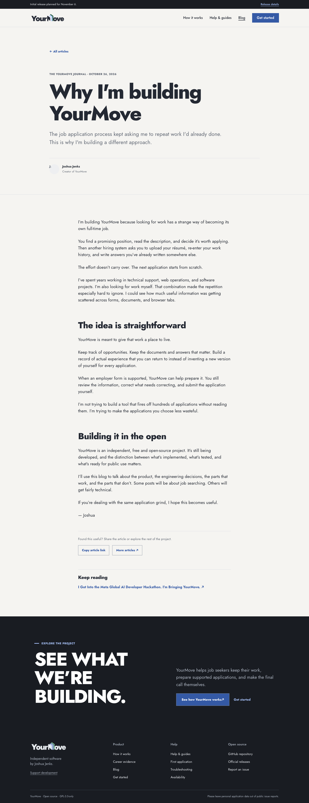
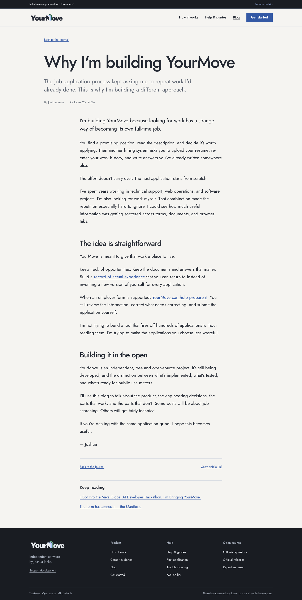
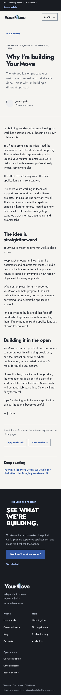
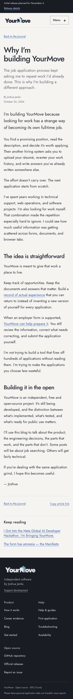
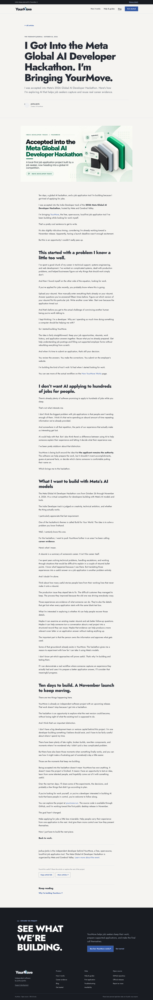
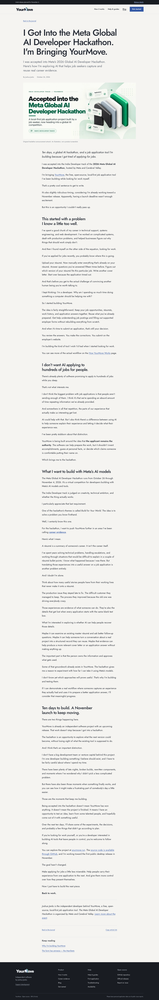
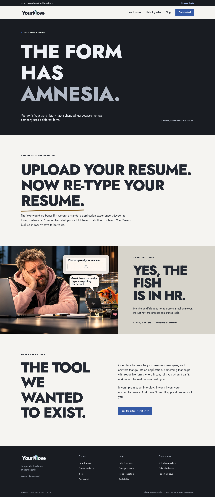
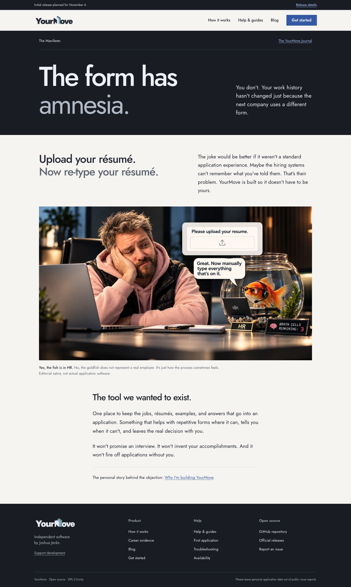
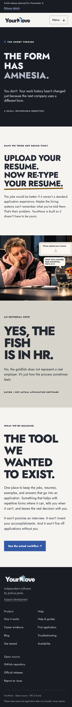
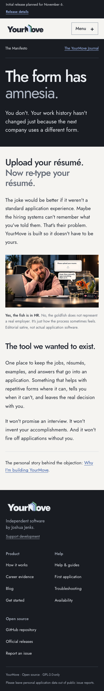
Focused verification results · Editorial checks · Navigation regressions · Quiet Ink regressions